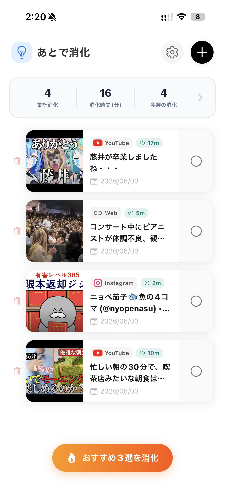
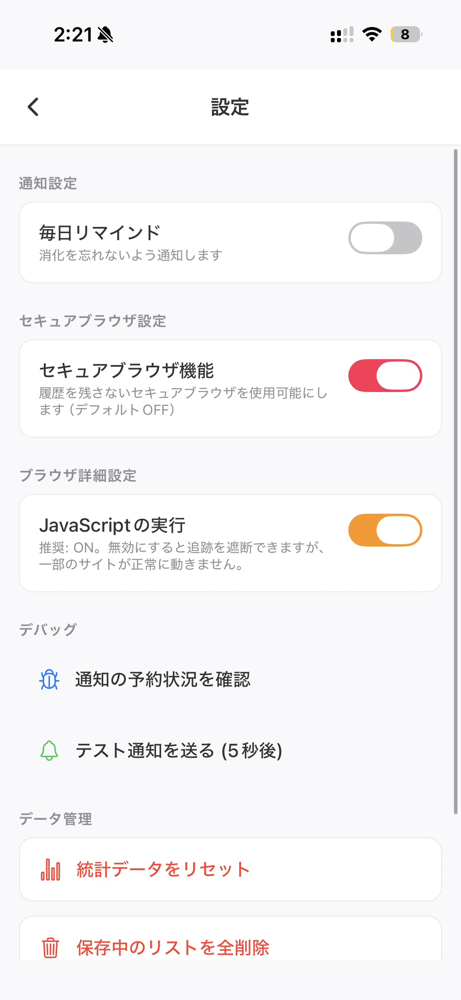

あとログ（Atolog）は、溜まりがちなブックマークや「後で見る」動画を確実に消化するためのブックマーク管理アプリです。快適な入力フローとプライバシー保護ブラウザで、あなたのインプット環境を最適化します。

情報のインプットから消化まで、ストレスのないスムーズな体験をデザインしました。
他アプリやSafariの共有メニューから共有するだけで、またはコピーしたURLを持って「あとログ」を起動するだけで、登録モーダルが自動的に最前面に立ち上がります。余計なタップを排除した瞬速のブックマーク体験を提供します。
「溜め込みすぎて何から手をつければいいか分からない」という問題を解決します。あとログは、あなたのリストから今消化すべき「3つのアイテム」だけを厳選して提示。余計な情報を見せず、集中してインプットに向き合える環境を作ります。
アプリ内に独自の超安全ブラウザを完備。クッキーや外部トラッカーの追跡をすべてカットし、画面キャプチャの防止機能、さらにバックグラウンドへ移行した際にリスト画面を目隠しする「プライバシーシールド」で、あなたの読書を守ります。

ただのリンク集ではない、快適な体験と信頼性のためのアプローチ。
ブックマーク追加時にサムネイル画像を自動的に抽出・端末内に直接保存（キャッシュ）します。元サイトの画像が削除されたり、通信状況が悪い場所でも、リストの美しい見た目を損ないません。
ローカルデータベース駆動で設計されているため、アプリの起動時やリストスクロール時にネットワーク通信を待つ必要がありません。瞬時に開き、一瞬で操作可能です。
あなたが保存したURL、履歴、メモ、タグなどのデータは、一切外部サーバーに送信されません。すべての情報はスマートフォン内部で完結し、完全な匿名性とプライバシーが約束されます。